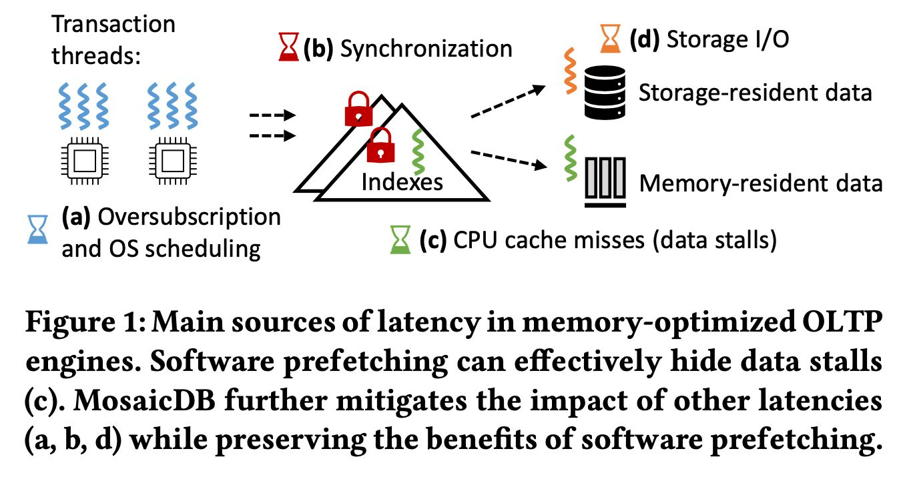
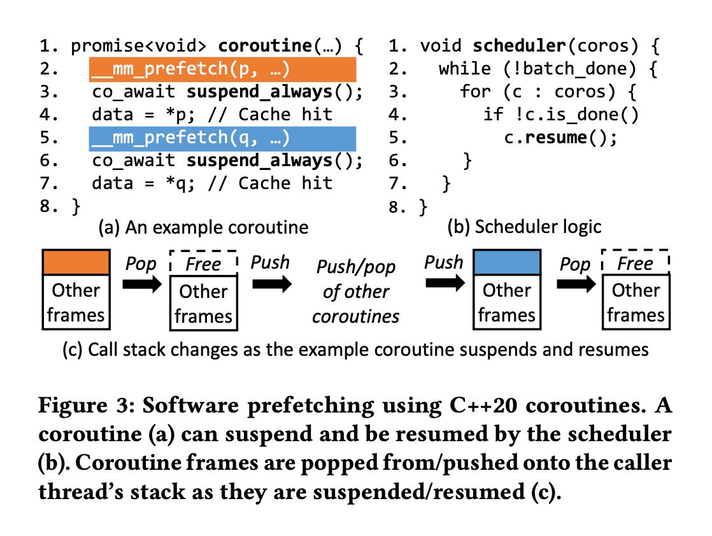
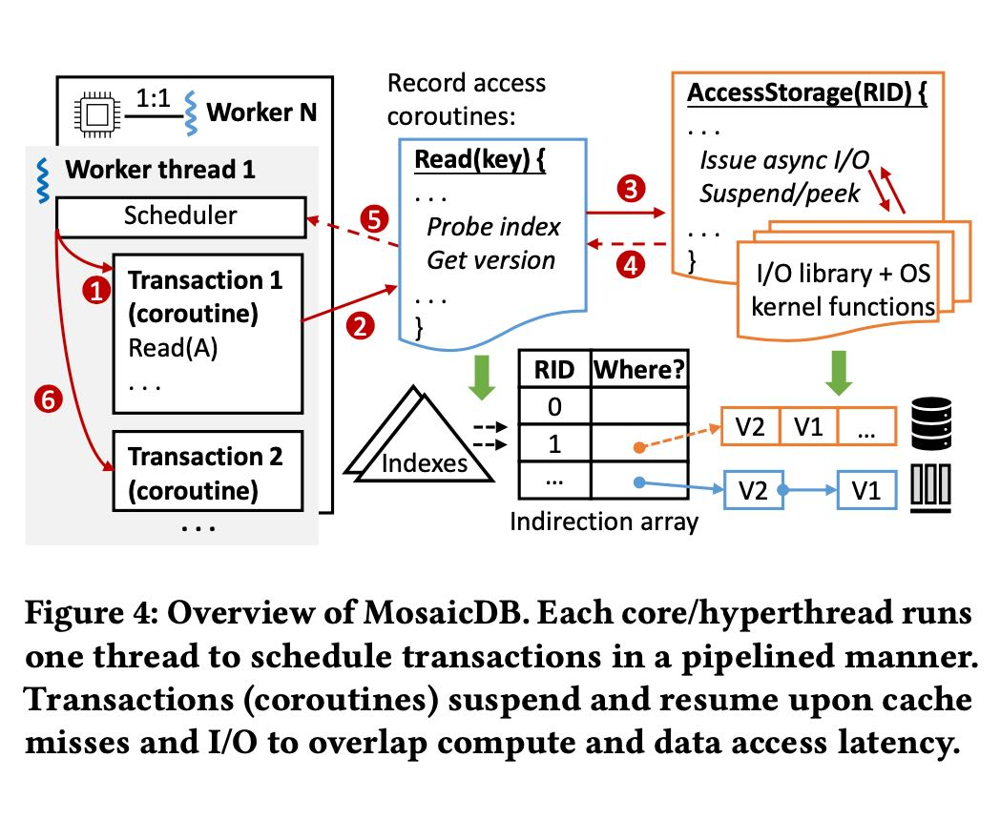
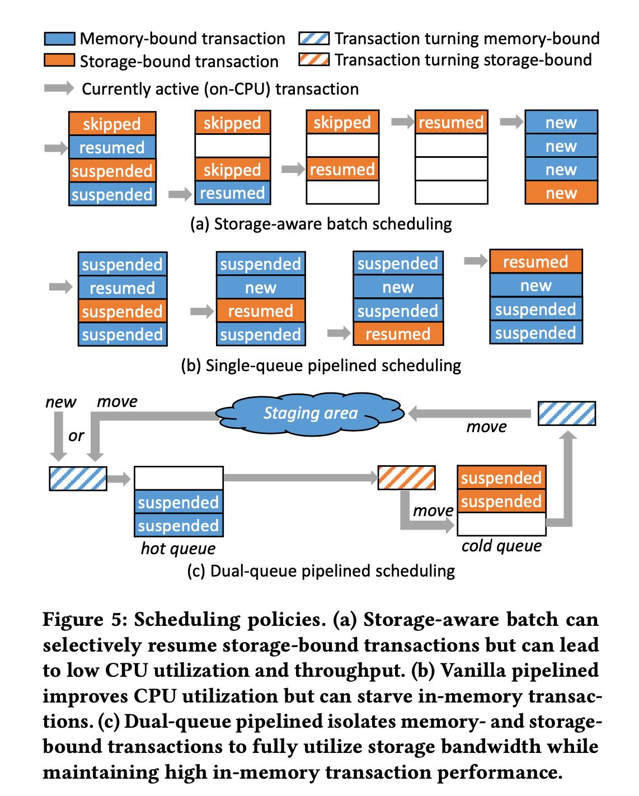

The Art of Latency Hiding in Modern Database Engines
针对现代OLTP数据库系统的改进来降低延迟：
- 使用coroutine来显示地进行调度多个transactions
- 在mm_prefetch以及发起io_uring的时候显示切换
- pipelined scheduling(这个可以说更多地是个特性而不是手段)
延迟大约来自于下面几个地方：
- oversubscription & os scheduling. 依靠大量线程来支撑IO
- synchronization. 同步也会造成线程调度
- cpu cache miss. 需要mm_prefetch
- storage io. 需要async io
为了躲避延迟需要依靠数据库本身来进行调度，在需要同步, mm_prefetch, io的时候主动进行切换，然后由db自己来进行调度。
文章的project叫做mosaicdb, 是基于corobase修改的，sfu-dis/mosaicdb: The Art of Latency Hiding in Modern Database Engines (VLDB 2024) 看完后感觉和ScyllaDB很像。

MDB用的是C++20 coroutine, 属于stackless coroutine. 但是我感觉如果stackful coroutine可能更加适合这里的操作：因为每个coroutine对应一个txn, 每个txn可能会比较深的调用。这也是为什么文章后面说到要做coroutine nesting: 将coroutine打平，这样整个txn处理只有一个coroutine， 不然调度器那边看到的就是许多个coroutine, 而其实这些coroutine都是属于一个txn下面的嵌套调用。

MDB架构大概如下，4,5虚线部分都是可以yield出来的。其中5是mm_prefetch, 4是io_uring.

基础的实现是每个coroutine只允许绑定固定数量的txns并且以batch方式来处理：完成这批txn之后coroutine来能接受下一批txn. 这样似乎并不友好，是因为如果里面txn执行时间很长的话，那么会让排队的但是可能很快的txn阻塞住。所以做了一个pipelined scheduling, 可以动态地增加新的txn. 这种实现是个问题也是一个机会，就是可以定义txn的优先级，但是这个似乎并不好做。基于线程的实现至少可以保证每个txn上可以分配到一定的时间。
ScyllaDB可能比较容易解决是因为KV数据库，每个txn都相对简单不会执行时间很长，但是general OLTP的话却需要考虑这个问题。
